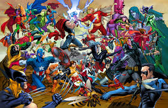

DC Comics (заснована у 1934 як National Allied Publications) — одна з найбільших і найуспішніших компаній, яка працює на американському ринку коміксів. Вона є видавничим відділом DC Entertainment Inc., що є дочірньою компанією Warner Bros. Власником Entertainment, у свою чергу, є Time Warner. DC Comics випускає матеріали, що характерні багатьма відомими персонажами, такими як Супермен, Бетмен, Диво Жінка, Флеш та решта Всесвіту DC (DC Universe ). Ініціали "DC" являють собою акронім популярної серії коміксів компанії Detective Comics, котра згодом стала частиною офіційної назви компанії. Офіційна штаб-квартира DC Comics знаходиться на Бродвеї, 1700, Мангеттен. DC Comics займає (за даними на 2011 рік) близько 31,50% ринку коміксів в Америці, в той час як його давній і найголовніший суперник- Marvel Comics близько 45%. Третє місце займає Image Comics- 5 %.
 DC